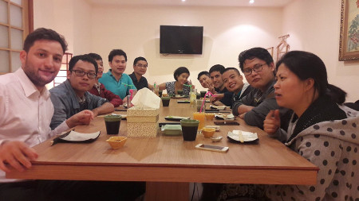

The OpenUp! program
By:

Speaker : Benoit Tellier
Linagora

- French open source software development company
- Gives organization control on their internal communications
- Present in France, Vietnam, Tunisia and Canada
- OBM, OpenPaas, LinShare, LinId, etc..
In Hanoï
Since april 2015
Initiative like Open-Up! and La French Tech
- Opportunities:
- Developer Java, Scala or JS
- System administrator
Why this presentation?
- What is OpenUp!
- Why joining OpenUp!
- How to join OpenUp!
What is OpenUp!
is an optional program for Bach Khoa students
Partnership between Linagora and HUST
Program benefits
- Learn about OpenSource software (Linux)
- Mentoring through tutored projects
- Practice professional English!
- Attend events and conferences.
- Get internship offers.
Program structure
- One class a week (3h): lecture and practical work.
- One tutored project per semester
- One (optional) English club per week
- One (optional) conference a month
- Linagora offers internships! Contact us!
Subject
- 1. Command line and linux
- 2. System administration
- 3. Devlopment OR cloud
- 4. Internship
How to join us?
Check-list
Interrested?
- Take a flyer!
- Register online: http://tinyurl.com/y8ar7enm
- Update and print your CV
- Come to the interview on the 12/09
Contact
- Retrieve this presentation online and on GitHub
- Follow OpenUp! on Facebook
- Link to the interview registration form
- Follow @LinViet on twitter
- Email me: btellier@linagora.com
Questions?
See you soon!